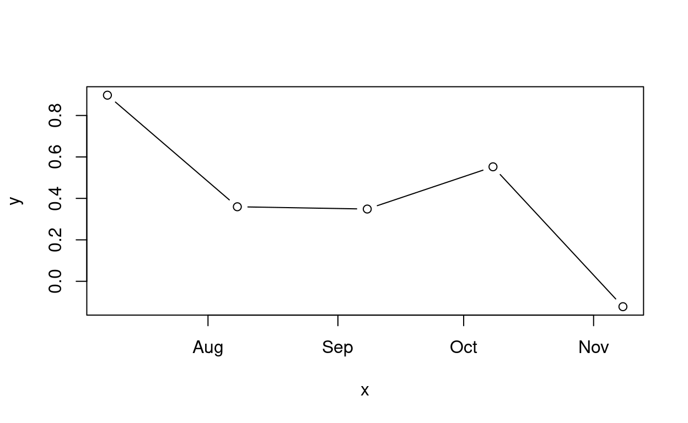
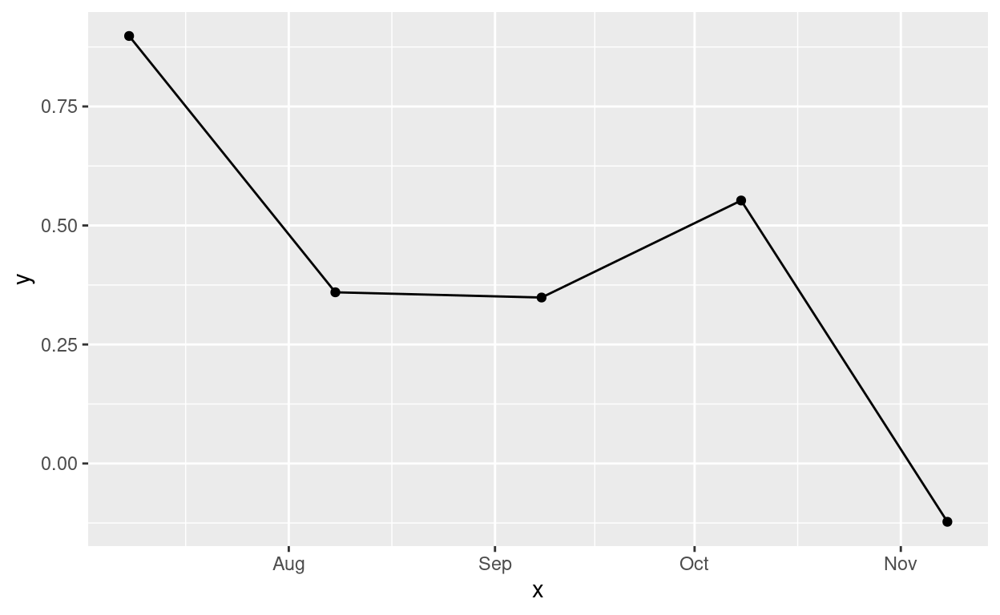

En la Clase 2 revisamos los aspectos teóricos básicos que nos permiten caracterizar a las series de tiempo.
En esta clase revisaremos las series de tiempo desde una perspectiva práctica, estableciendo los requerimientos necesarios para lograr manipularlas, agregarlas y pronosticarlas usando ecosistemas de R. Luego de esta clase podrás:
- Conocer los requerimientos técnicos (packages) para trabajar con series de tiempo en
R - Manipular y agregar series de tiempo
- Entender el proceso de evaluación de pronósticos a través del tiempo
- Definir indicadores de desempeño adecuados para evaluar modelos de pronóstico
- Entender la importancia de establecer una modelo ingenuo como pronóstico inicial
- Generar características para modelos de pronóstico a partir del índice temporal asociado a la serie
- Modelar series de tiempo utilizando el Regresión Lineal
Objetos de R para Series de Tiempo
Desde la perspectiva programática, una serie de tiempo es una serie de observaciones cuyo principal atributo es poseer un índice temporal (timestamp) asociado a cada una de ellas. Dicho índice puede tomar la forma de un objeto de R tipo date, un objeto temporal u otro formato dependiendo de la frecuencia de la serie. La generación de dicho índice a partir de datos raw no es trivial y en general requerirá de un preprocesamiento o formateo de los datos a un formato de series de tiempo. Es por ello que conocer los ecosistemas que permitan al pracicante ser capaz de trabajar con períodos temporales y fechas se vuelve esencial.
base 🧓👴
Date
En ciertos lugares existen diferentes convenciones para trabajar con fechas (dates).
Show code
knitr::include_graphics("https://iso.mit.edu/wp-content/uploads/2020/01/am_dateformat.gif")
](https://iso.mit.edu/wp-content/uploads/2020/01/am_dateformat.gif)
Figure 1: Fuente: Date Format in the United States
Sin embargo, existe un estándar global (ISO 8601 YYYY-MM-DD) que especifica la manera correcta para lidiar con fechas evitando toda confusión: ordenando los componentes de manera decreciente (años → meses → días). Cada valor posee una cantidad fija de digitos, por lo que es necesario rellenar con ceros algunos meses (i.e Septiembre: mes 9 → 09). La mejor manera de indicar a R que nos encontramos trabajando con fechas es declararlo de manera explícita utilizando el método as.Date sobre un string con una fecha en formato ISO.
Show code
2021-11-08 # No es una fecha
[1] 2002Show code
str("2021-11-08") # String con una fecha
chr "2021-11-08"Show code
as.Date("2021-11-08")
[1] "2021-11-08" Date[1:1], format: "2021-11-08"Trasbambalinas, los objetos tipo Date son almacenados como los días transcurridos desde 1970-01-01, lo que significa que es posible llevar a cabo comparaciones matemáticas con ellas.
Show code
# ¿Que fecha era hace un dia (una unidad de tiempo) atras?
as.Date("2021-11-08") - 1
[1] "2021-11-07"Show code
Time difference of 14 daysSi contamos con fechas, podemos hacer uso de la potencia de R para graficar:
Show code

Show code
ggplot() +
geom_line(aes(x = x, y = y)) +
geom_point(aes(x = x, y = y))

Podemos obtener la fecha del sistema en el que nos encontremos trabajando con Sys.Date()
Show code
Sys.Date()
[1] "2021-11-08"Time
Continuando la idea de ISO 8601, para incorporar un período en específico continuamos definiendo elementos de manera decreciente: HH:MM:SS, donde las horas poseen dos dígitos fijos (00 - 24) así como también los minutos (00 - 59) y segundos, pudiendo existir sin separador o con :.
Existen dos tipos de fechas en R:
POSIXlt: lista con componentes nombradosPOSIXct: segundos desde1970-01-01 00:00:00, la coersión desde un string se lleva cabo medianteas.POSIXct()
Show code
lesson3_date <- as.POSIXct("2021-11-08 19:00:00")
str(lesson3_date)
POSIXct[1:1], format: "2021-11-08 19:00:00"Timezone
La ISO 8601 también permite especificar zonas, asumiendose zona local ante la ausencia de su definición.
Show code
# Coordinated Universal Time
as.POSIXct("2021-11-08 19:00:00", tz = "UTC")
[1] "2021-11-08 19:00:00 UTC"La operatoria aritmética revisada con datos del tipo Date se extiende a los datos tipo POSIXct.
lubridate ⏰
A medida que los requerimientos de manipulación de datos han evolucionado a través del tiempo, también lo han hecho los paquetes con los cuales se abordan dichos desafíos. lubridate es un paquete de R que permite trabajar de manera fácil con tiempos y fechas1.
Veamos como trabajar fechas a partir de distintos formatos:
Show code
lubridate::ymd("2021-11-08")
[1] "2021-11-08"Show code
lubridate::dmy("08/11/2021")
[1] "2021-11-08"Show code
lubridate::parse_date_time("Sep 11th, 2021", order = c("mdy"))
[1] "2021-09-11 UTC"Show code
lubridate::parse_date_time("11th Sep 2021", order = c("dmy"))
[1] "2021-09-11 UTC"Show code
lubridate::year("2021-11-08")
[1] 2021Show code
lubridate::month("2021-11-08")
[1] 11Show code
lubridate::month("2021-11-08", label = TRUE)
[1] Nov
12 Levels: Jan < Feb < Mar < Apr < May < Jun < Jul < Aug < ... < DecShow code
lubridate::day("2021-11-08")
[1] 8Show code
lubridate::wday("2021-11-08", label = TRUE)
[1] Mon
Levels: Sun < Mon < Tue < Wed < Thu < Fri < SatShow code
lubridate::yday("2021-11-08")
[1] 312Show code
lubridate::ymd_hm("2021-11-08 07:00pm")
[1] "2021-11-08 19:00:00 UTC"Show code
lubridate::hour("2021-11-08 07:00pm")
[1] 7Show code
lubridate::minute("2021-11-08 07:00pm")
[1] 0Show code
# Chile because of reasons
lubridate::with_tz("2021-11-08", "America/Santiago")
[1] "2021-11-08 -03"Show code
lubridate::make_date(year = 2021L, month = 11L, day = 8L)
[1] "2021-11-08"Show code
lubridate::make_datetime(year = 2021L, month = 11L, day = 8L, hour = 7L, min = 0L)
[1] "2021-11-08 07:00:00 UTC"Show code
lubridate::quarter("2021-11-08 07:00pm")
[1] 4Show code
lubridate::semester("2021-11-08 07:00pm")
[1] 2Show code
lubridate::leap_year("2021-11-08 07:00pm")
[1] FALSEPodemos restar fechas utilizando difftime()
Show code
difftime("2021-11-08", "2021-10-25", units = "weeks")
Time difference of 2 weeksAhora
Show code
lubridate::now()
[1] "2021-11-08 02:41:43 -03"Hoy
Show code
lubridate::today()
[1] "2021-11-08"En una semana más
En particular, cabe destacar dos definiciones en lubridate para intervalos temporales
period: período o concepto humano de intervalo temporal. Una fecha (datetime) + un período de un día = mismo momento en la fecha siguiente.duration: duración o concepto cronometrado del tiempo. Una fecha + un período de un día = fecha + 86400 segundos.
Veamos la diferencia
Show code
lubridate::days(x = 7)
[1] "7d 0H 0M 0S"Show code
lubridate::ddays(7)
[1] "604800s (~1 weeks)"ts() 💊
Supongamos que tenemos los siguientes datos:
| Año | Observación |
|---|---|
| 2017 | 20 |
| 2018 | 30 |
| 2019 | 60 |
| 2020 | 40 |
| 2021 | 25 |
Podemos almacenar una serie de tiempo en un objeto tipo ts utilizando la función ts().
Es posible asociar observaciones que poseen una frecuencia mayor que la anual utilizando el argumento frequency
En este caso, las frecuencias se definen como sigue
| Dato | Frecuencia |
|---|---|
| Anual | 1 |
| Trimestral | 4 |
| Mensual | 12 |
| Semanal | 522 |
¿Qué ocurre si la frecuencia de mis observaciones es mayor a la semanal?
En el caso de utilizar objetos ts, es necesario decidir que frecuencia es más representativa de la serie3 considerando efectos como la estacionalidad (en caso de que aplique).
zoo() y xts() 💊💊
tsibble() 💊💊💊
timetk() 💊💊💊💊🚀
Evaluación de pronósticos 🤔📏
Set de entrenamiento y test 🔪
La precisión de un pronóstico sólo puede ser determinada considerando qué tan bien se desempeñan los pronósticos generados en datos nuevos que no han sido utilizados para ajustar el modelo (Hyndman and Athanasopoulos (2021)). Así, al igual que como se evalúan los modelos de Machine Learning, es una práctica común separar los datos disponibles en dos conjuntos, un conjunto de ajuste o entrenamiento (training set)4 y otro de evaluación (test set)5, donde los datos de entrenamiento son utilizados para estimar los parámetros de cualquier método de pronóstico y los datos de evaluación son utilizados para determinar su precisión. Dado que los datos de evaluación no son utilizados en el proceso de elaboración de los pronósticos, éstos nos permiten obtener un indicador confiable de qué tan bien puede pronosticar un modelo los datos nuevos.
Al momento de evaluar el desempeño de modelos de pronóstico es necesario distinguir entre un pronóstico (forecast) o valor predicho (predicted value) de \(y_t\), realizado en algún período previo, por ejemplo \(t-\tau\), y un valor ajustado (fitted value) de \(y_t\), que ha resultado de estimar los parámetros de un modelo de series de tiempo en datos históricos, generando residuales.
El método más común para evaluar el éxito de un pronóstico para predecir los valores reales es utilizar métricas de precisión o error. Aquí error no debe entenderse como una equivocación, sino como la parte impredecible de una observación. La selección de la métrica específica de error dependerá de los objetivos de pronóstico de que se tengan.
El tamaño del set de evaluación depende de qué tanta información se posea y qué tan adelante se quiera pronosticar. Es ideal que el test set tenga al menos el largo del horizonte de pronóstico máximo requerido.
Algunas observaciones a considerar
- Un modelo que se ajusta bien a los datos de entrenamiento no necesariamente pronosticará bien.
- Siempre es posible obtener un ajuste perfecto usando un modelo con una cantidad de parámetros suficiente6
- Sobreajustarse (over-fit) un modelo a los datos es tan malo como fallar en identificar los patrones sistemáticos en ellos.
Validación Cruzada para Series de Tiempo (TSCV) 📝
Mencionar revisión de TSCV en clase 01.
Modelos benchmark (naive) 😌
Análisis de residuales 🚯
El análisis de residuales permite analizar qué tan bien el modelo captura e identifica los patrones de la serie. Además, podemos elaborar intervalos de confianza para los pronósticos generados a partir de la distribución de los residuales. Podemos definir a los residuales como la diferencia entre el valor real observado (\(y_i\)) y su correspondiente valor ajustado por el modelo (\(\hat{y_i}\)), para cada \(i = 1, \dots, T\).
Métricas de desempeño 💯
MAE
En el error absoluto medio (Mean Absolute Error (MAE)), el error de pronóstico está en la misma escala que los datos originales. Debido a lo anterior, no puede ser utilizado para comparar desempeño entre series que involucren distintas unidades de medida. Un método de pronóstico que minimice el MAE conducirá a pronosticos de la mediana. Este método no es sensible a outliers.
\[MAE = \frac{1}{T}\sum_{t=1}^{T}\left|y_{t}-\hat{y}_{t}\right|\]
MSE
El error cuadrático medio (Mean Squared Error (MSE)) cuantifica la distancia al cuadrado promedio entre los valores reales y los pronosticados. El efecto de elevar al cuadrado previene que los valores negativos y positivos se cancelen entre sí, penalizando el error si es muy elevado. Un método de pronóstico que minimice el MSE conducirá a pronosticos de la media.
\[MSE = \frac{1}{T}\sum_{t=1}^{T}(y_t - \hat{y}_t)^2\]
RMSE
Similar a MSE, en las unidades de las observaciones.
\[RMSE = \sqrt{MSE} = \sqrt{\frac{1}{T}\sum_{t=1}^{T}(y_t - \hat{y}_t)^2}\]
MAPE
El error porcentual absoluto medio (Mean Absolute Percentage Error (MAPE)) es una de las métricas más fáciles de comparar y comunicar con interlocutores no-técnicos dado que representa un porcentaje. Los errores porcentuales poseen la ventaja de no tener unidades y son utilizados para comparar el desempeño de un modelo de pronóstico entre datasets. Sin embargo, poseen la desventaja de ser infintos o indefinidos si \(y_t = 0\) para cualquier periodo de interés \(t\), además de tener valores extremos cuando \(y_t\) es cercano a cero. Además, poseen la desventaja de penalizar errores negativos más que los positivos, lo que condujo a la elaboración de otra métrica porcentual llamada sMAPE (symmetric MAPE), usado en la competencia M3.
\[MAPE = \frac{1}{T}\sum _{t=1}^{T}\bigg(\frac{|y_{t}-\hat{y}_{t}|}{y_{t}}\bigg)\times100\]
SMAPE
\[SMAPE = {\frac{1}{T}\sum _{t=1}^{T}\bigg(\frac{2|y_{t}−\hat{y}_{t}|}{y_{t}+\hat{y}_{t}}\bigg)\times 100}\]
\(R^{2}\)
\[R^{2} = {1-{\frac {\sum _{t=1}^{T}\left(y_{t}-\hat{y}_{t}\right)}{\sum _{i=1}^{T}\left(y_{t}-\bar{y}_{t}\right)}}}\]
Evaluación de desempeño en R 📚
Podemos encontrar las métricas revisadas anteriormente en los siguientes paquetes:
Regresión Lineal para pronóstico de series de tiempo 📈✨